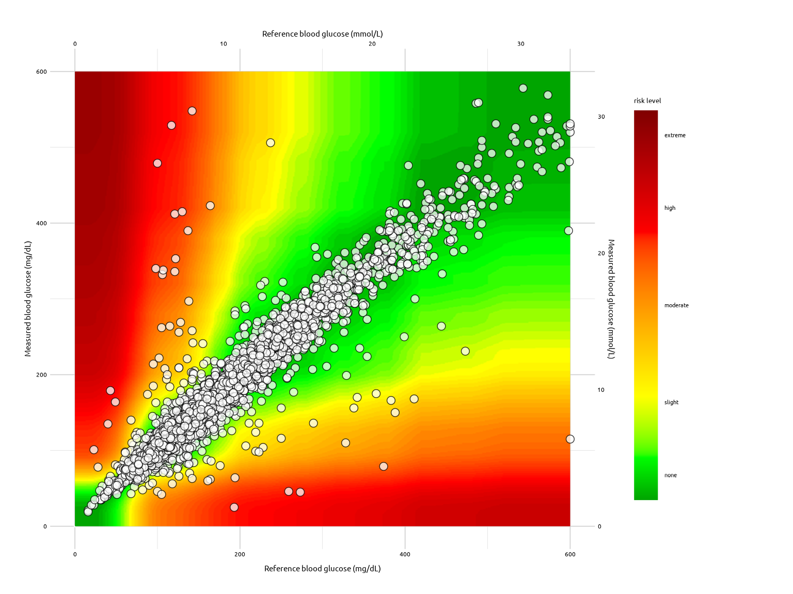

Assume I have a .csv file with BGM and REF columns (like the one in
the segtools inst/extdata/
folder:
test_data <- vroom::vroom(
file = "https://bit.ly/3JwGoiP", delim = ",")
dplyr::glimpse(test_data)
#> Rows: 9,891
#> Columns: 2
#> $ BGM <dbl> 121, 212, 161, 191, 189, 104, 293, 130, 261, 147, 83, 132, 146, 24…
#> $ REF <dbl> 127, 223, 166, 205, 210, 100, 296, 142, 231, 148, 81, 131, 155, 25…
The segtools package can create the following
outputs
Summary Tables
The summary tables rely on separate functions for each table.
Pairs table
-
seg_pairs_table() returns the pairs comparing
BGM to REF
| Total |
9891 |
| BGM < REF |
4710 |
| BGM = REF |
479 |
| BGM > REF |
4702 |
| REF > 600: Excluded from SEG Analysis |
23 |
| Total included in SEG Analysis |
9868 |
MARD table
- The MARD table requires two functions:
-
seg_mard_tbl() to calculate the Bias, MARD, CV, and
lower/upper 95% CI
| 9868 |
0.6% |
7% |
14.8% |
-28.3% |
29.6% |
Risk grade table
-
seg_risk_grade_tbl() returns a table of risk
grades
| 1 |
A |
9474 |
96% |
0 - 0.5 |
| 2 |
B |
349 |
3.5% |
> 0.5 - 1.0 |
| 3 |
C |
35 |
0.4% |
> 1.0 - 2.0 |
| 4 |
D |
10 |
0.1% |
> 2.0 - 3.0 |
| 5 |
E |
NA |
NA |
> 3.0 |
Risk category table
-
seg_risk_level_table() return a table of risk levels
and categories
| 0 |
None |
9474 |
96% |
| 1 |
Slight, Lower |
294 |
3% |
| 2 |
Slight, Higher |
55 |
0.6% |
| 3 |
Moderate, Lower |
24 |
0.2% |
| 4 |
Moderate, Higher |
11 |
0.1% |
| 5 |
Severe, Lower |
10 |
0.1% |
| 6 |
Severe, Upper |
NA |
NA |
| 7 |
Extreme |
NA |
NA |
ISO range table
-
seg_iso_range_tbl() returns a table of compliance
ranges
| 1 |
<= 5% or 5 mg/dL |
5328 |
54% |
| 2 |
> 5 - 10% or mg/dL |
2842 |
28.8% |
| 3 |
> 10 - 15% or mg/dL |
1050 |
10.6% |
| 4 |
> 15 - 20% mg/dL |
340 |
3.4% |
| 5 |
> 20% or 20 mg/dL |
308 |
3.1% |
Compliant pairs table
-
seg_binom_tbl() returns a table binomial test for
compliant pairs
| 9220 |
93.4% |
9339 |
94.6% |
93.4% < 94.6% - Does not meet BGM Surveillance Study
Accuracy Standard |
Graphs
segtools can also create the following graphs:
The SEG Graph
seg_graph(
data = test_data,
alpha_var = 3 / 4,
size_var = 2.5,
color_var = "#000000",
fill_var = "#FFFFFF"
)

The Modified Bland-Altman Plot